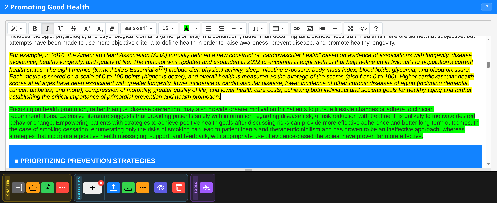
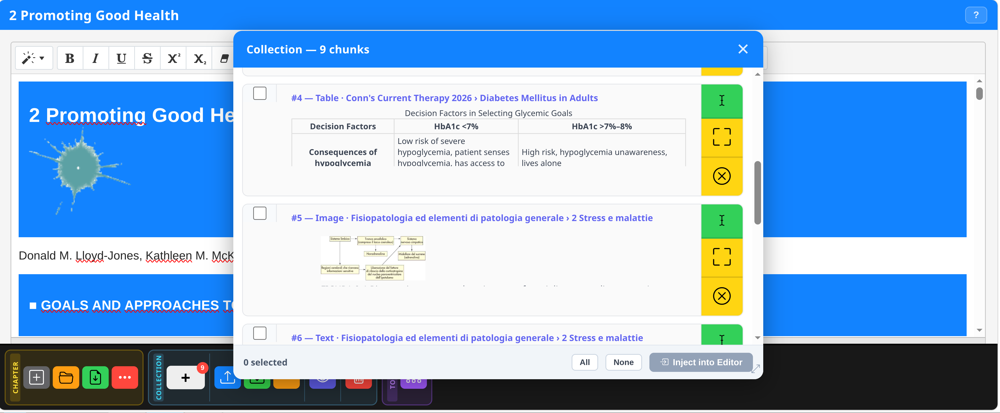

Chunk collection system for text, images and tables. Inspect, select, export as JSON and feed the editor with your study materials.
A collection is a container of content fragments — called chunks — collected while working on a chapter in Noesis Editor. Each chunk can be selected text, an image or an HTML table.
Any text selection in the chapter in the Editor. Includes HTML formatting (bold, italic, links).
Images saved as inline base64. Perfect for charts, diagrams and figures to reuse in the editor without external dependencies.
HTML tables with structure faithfully preserved — rows, columns, cells and attributes. Ready to be edited in the WYSIWYG editor.
Chunks are collected directly in the WYSIWYG Editor, using the Collection toolbar at the bottom of the window.
Select the desired text in the editor with mouse or touch. Click the [+] button in the Collection section of the bottom toolbar. A toast confirms the addition.
Double-tap (desktop) or long press (600ms, Android) on an image in the editor. The image is added directly without the [+] button.
Long press (600ms) on a table cell. The entire table is added as a chunk.
The [+] button shows a red badge with the total number of chunks currently in the collection. Updates in real time with each operation.
Click the Clear button (🗑️ icon, red) in the Collection toolbar to empty the entire collection. A confirmation prompt appears.

The Collection Inspect panel opens in a floating non-modal overlay in the editor. Shows all collected chunks with visual preview.
Each chunk shows a preview of the content: truncated text for text chunks, thumbnail for images, first row for tables.
You can select/deselect individual chunks for export. Export JSON respects the current selection.
Each chunk has a delete button. Removal is immediate and does not affect the editor content.

The JSON format is the bridge for transporting collections between sessions, devices or editors.
Saves all chunks (or only selected ones) in a JSON file. The format includes type (text/image/table), HTML content and collection metadata.
Loads a previously exported JSON file. Chunks are added to the current session. Compatible with all Noesis Editor versions from v700 onwards.
The collection workflow allows you to assemble study material from multiple chapters into a single coherent document.
As you work through extracted chapters, add the key passages, significant images and relevant tables to the collection.
At the end of the session, export the JSON. Open Noesis Editor in standalone mode (Open Editor from the Library), import the JSON.
Use the chunks as building blocks to assemble the final document. Export as PDF, DOCX or Markdown.